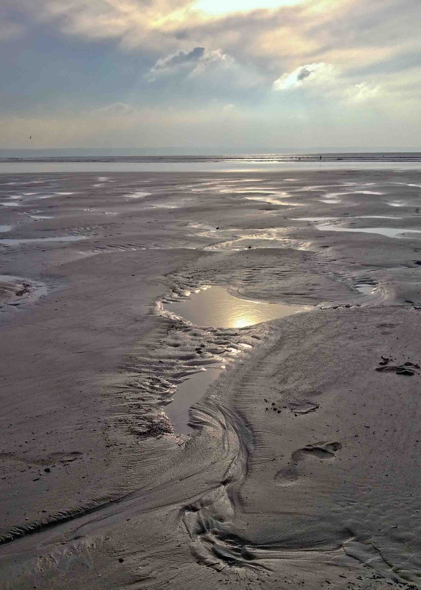

Another big interest of mine is graphic design.
Another big interest of mine is graphic design. 
My name is Anthony, and I am someone who enjoys a mix of creativity, sports, and spending time with the people who matter most. Baseball has always been one of my favorite activities, both to play and to watch. I especially enjoy following the Dodgers, and watching their games each night has become part of my routine. Baseball has taught me a lot about discipline, teamwork, and staying focused, which are qualities I try to carry into my everyday life.
The beach is another place I really enjoy. It gives me a chance to relax, clear my mind, and appreciate the beauty of the outdoors. Whether it is walking along the sand, spending time in the water, or just sitting and listening to the waves, the beach is a place where I can recharge and feel at peace. I like that it balances out the busier parts of my life with calm moments of reflection. Another big interest of mine is graphic design.
I enjoy using creativity to turn ideas into visuals, and design gives me a way to express myself while building new skills. It combines art and technology in a way that challenges me to think differently and find unique solutions. Graphic design is something I hope to continue improving in, since it is both fun and rewarding to see my work come together.  Spending time with friends is also very important to me.
Spending time with friends is also very important to me.
I enjoy hanging out, laughing, and making memories with the people I am closest to. Whether we are talking, playing games, or going places together, I value those moments because they remind me how important friendships are. They bring balance to my life and give me experiences that I know I will always remember. 
Finally, video games are another hobby that I enjoy. They give me a chance to relax and have fun, while also challenging me to think strategically and improve my skills.
Playing games is not only entertaining but also a way to connect with others who share the same interests. Altogether, my love for baseball, the beach, graphic design, spending time with friends, and playing video games show the different sides of who I am and the things that make me happiest.
The About page introduces who I am and highlights some of my personal interests and creative skills. In two to three short paragraphs, I describe my hobbies, such as playing sports, enjoying time at the beach, and hanging out with friends, along with my interest in video games and music. I also explain my growing knowledge of web design and graphic design, showing how I use creativity and design skills to bring personality into my projects. Each paragraph is styled with a slightly different background color in the CSS to make the page visually appealing while keeping the layout subtle and professional. This page also demonstrates how to embed and style multimedia. A YouTube video is inserted using an "iframe" so visitors can view content directly from the page. The navigation bar uses styled buttons with CSS that include padding, rounded corners, and hover effects, making the site feel interactive. Images on the page are also styled with borders and drop shadows to stand out while maintaining a clean look. To connect with my interests, I’ve added at least one external link that opens in a new tab, leading to a site related to design inspiration or another hobby. Altogether, this About page blends text, media, and style to showcase who I am in both a creative and technical way.This is my first time in Web design and my 2nd year in Graphic!
| Year | Milestone |
|---|---|
| 2024 | Started a Graphic Design class at school. |
| 2024 | Learned how to design with WordPress and created my first projects. |
| 2025 | Building my first personal website (this one!). |
My name is Anthony Lee and I am a Web/Graphic designer based in Oceanside, CA. I also enjoy watching and playing baseball. I am also a experence person in Graphic Design.
I really enjoy spending time with my friends, hanging out outside in nature, and also playing for the El Camino baseball team. If I could find a way to somehow combine those three, that would be heaven.
I really appreciate you taking a look at my site. If you want more information or you'd like to hire me for any work, please drop me a note and I'll get back to you.